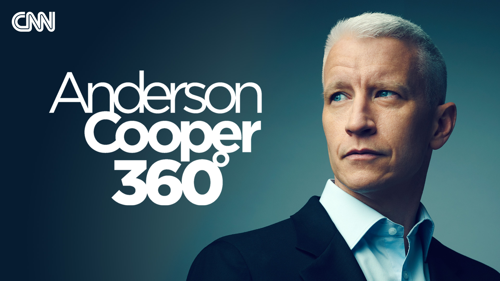

【CNN News AC360 20250724 特朗普关于出生公民权的行政令被裁定违宪｜特朗普的名字出现在爱泼斯名单中｜以色列封锁援助导致加沙人道主义危机恶化】
Summary: The video covers breaking news on Trump's birthright citizenship order being ruled unconstitutional, dire humanitarian conditions in Gaza due to Israeli aid blockade, and features segments on African development, business trends, and a Coca-Cola recipe change debate.
摘要： 本期节目报道了特朗普总统关于出生公民权的行政令被裁定违宪的突发新闻，以色列封锁援助导致加沙人道主义危机恶化的现状，并包含非洲发展、商业趋势专题讨论以及可口可乐配方变更争议等内容。

⏱️ Estimated Reading Time: 82 min.
📚 四级生词 📚 六级生词 📚 雅思生词 📚 托福生词 📚 专八生词 📚 SAT生词 📚 考研生词 📚 GRE生词 📚 高考生词 📚 其它生词
Tonight on 360, the Breaking News, President Trump told his name is in the Jeffrey Epstein files, and Republicans are making moves to subpoena those files from the Department of Justice.
今晚《360度》突发新闻：特朗普总统被告知他的名字出现在杰弗里·爱泼斯坦文件中，共和党人正采取行动向司法部传唤这些文件。
The one the president was told his name is in.
总统被告知他的名字出现在其中。
Plus, heartbreaking testimony from the families of Brian Coburgers' victims before he was sentenced to life in prison.
此外，布莱恩·科伯格案的受害者家属在他被判终身监禁前作证，令人心碎。
And later, more than 108 organizations warned of mass starvation in Gaza.
随后，108多个组织警告加沙将发生大规模饥荒。
We will speak to a frontline doctor who was just there about the situation on the ground.
我们将采访一位刚从当地返回的前线医生，了解实地情况。
Good evening, John Berman here in Ferrand, or Senator the Breaking News, a blunt headline.
晚上好，我是约翰·伯曼，在费兰德为您报道，参议员突发新闻，标题直截了当。
President Trump was told by the Attorney General that he is in the Jeffrey Epstein files.
特朗普总统被司法部长告知他的名字出现在杰弗里·爱泼斯坦文件中。
He was told he was in the files two months ago, and then last week said, no, no, he wasn't.
两个月前他被告知此事，但上周却否认称“不，没有这回事”。
He was.
但事实如此。
This was during a briefing on the findings of the Justice Department's review of the documents related to Epstein, that's according to sources familiar with the discussion.
据熟悉讨论的消息人士称，这是在司法部审查爱泼斯坦相关文件的简报会上透露的。
Those sources said the Justice Department's review found that the files appeared to include several unsubstantiated claims that they determined not to be credible, including those relating to Trump.
消息人士称，司法部审查发现文件中包含多项未经证实的指控，包括涉及特朗普的内容，均被认定为不可信。
Bondi also raised in the meeting that several names of other high profile figures were mentioned, the official said.
官员称，邦迪还在会议上提到文件中涉及其他多位知名人士。
And it's worth noting that being mentioned in the files does not in any way indicate wrongdoing.
需注意的是，被提及名字并不代表存在不当行为。
The Wall Street Journal, who first reported this story, said that AG Bondi, who was joined in the briefing by her deputy Todd Blanche, who previously served as President Trump's attorney in the criminal hush money trial, the briefing took place in May.
《华尔街日报》率先报道此事，称简报会于5月举行，邦迪司法部长与副手托德·布兰奇共同出席，后者曾在特朗普总统的刑事封口费案中担任其律师。
Weeks before the Justice Department released a memo on July 6th attempting to close the book on Jeffrey Epstein, which said, quote, no further disclosure would be appropriate or warranted.
数周后，司法部于7月6日发布备忘录试图终结爱泼斯坦案，称“进一步披露既不恰当也无必要”。
That memo kicked up a fiora in the President's supporters among them that continues to this day.
该备忘录引发特朗普支持者的强烈反应，持续至今。
CNN reached out to the White House about the journal report, their response read in part, this is nothing more than a continuation of the fake news stories concocted by the Democrats in the liberal media.
CNN就《华尔街日报》报道询问白宫，其回应称“这不过是民主党与自由派媒体捏造的假新闻延续”。
That was their response.
这是他们的回应。
But we now know the President was told he was in the files, which he was specifically asked about last week.
但现在我们已知总统被告知此事，而他上周被直接问及时却否认。
No, no, she's, she's given us just a very quick briefing.
“不，没有，她只是简单通报了一下”。
No, no, he says we asked the Justice Department for Reaction to the reporting, attorney general Tom Bondi and deputy AG Todd Blanche, the two officials in that Trump briefing according to the Wall Street Journal.
“不，没有”，他表示。我们向司法部询问对报道的回应，根据《华尔街日报》，司法部长汤姆·邦迪和副部长托德·布兰奇正是向特朗普简报的两位官员。
They released a statement.
他们发表声明称：
The DOJ and FBI reviewed the Epstein files and reached the conclusion set out in the July 6th memo, nothing in the files warranted further investigation or prosecution and we filed a motion in court to unseal the underlying grand jury transcripts.
“司法部和FBI审查爱泼斯坦文件后得出7月6日备忘录中的结论，文件内容无需进一步调查或起诉，我们已向法院申请解封大陪审团笔录”。
As part of our routine briefing, we made the President aware of the findings.
“作为例行简报，我们向总统通报了调查结果”。
This report comes as some Republicans on the Hill continue to push for more information.
该报道发布之际，国会共和党人持续施压要求更多信息披露。
This afternoon, the House Oversight Committee officially subpoenaed Galein Maxwell for a deposition, it's scheduled for August 11th at the Federal Correctional Institution in Tallahassee, where she's currently serving a 20-year sentence.
今日下午，众议院监督委员会正式传唤吉兰·麦克斯韦尔作证，定于8月11日在塔拉哈西联邦惩教所进行，她目前正在该处服20年刑期。
And late tonight, a subcommittee won't even further.
今晚稍晚，某小组委员会更进一步。
They voted as a peon to the Justice Department for the Epstein files.
他们投票决定向司法部发出传票索要爱泼斯坦文件。
This all happened despite Speaker Mike Johnson shutting down the House a day early to avoid floor votes on any Epstein-related matters.
尽管议长迈克·约翰逊提前一天休会以避免就爱泼斯坦相关事项投票，这些行动仍持续推进。
Republican Congresswoman Nancy Mays who voted to subpoenaed the Justice Department was asked about Speaker Johnson's move.
投票支持传唤司法部的共和党众议员南希·梅斯被问及约翰逊议长的决定。
Listen to this.
听听她的回应：
What do you mean by this speaker adjourning the House early to avoid this fight of rap stain?
“议长提前休会以避免这场肮脏斗争是什么意思？
This fight's coming no matter, I mean this is here and I made it part of my life's mission to protect women and kids and I think that I'm ready to take this vote.
这场斗争不可避免，我已将保护妇女儿童作为毕生使命，我已准备好投票”。
I think we should take this vote and move forward with this country forward and the victims deserve justice and people deserve transparency.
“我们应投票推动国家前进，受害者应得正义，人民应得透明”。
Also today, no federal judge in Florida denied the Justice Department's request to release grand jury documents from the investigation into Jeffrey Epstein.
同日，佛罗里达州联邦法官驳回司法部要求公开爱泼斯坦调查大陪审团文件的申请。
That request came at the direction of President Trump late last week in an attempt to quell some of the outrage from his biggest supporters.
该请求是特朗普总统上周为平息核心支持者愤怒而指示提出。
Well, the judge's ruling is not the last word in grand jury testimony about Epstein.
法官裁决并非爱泼斯坦大陪审团证词的最终结论。
It does underline a glaring fact in all of this.
但凸显了一个明显事实：
The adjourn a general has the power today, tonight, right now, to release other information in the so-called Epstein files sitting at the Justice Department.
司法部长有权立即公开司法部所谓“爱泼斯坦文件”中的其他信息。
Sure, they would have to be carefully reviewed and redacted, but she is not doing that and the President is not really forcing her.
当然需经审慎审查和编辑，但她并未行动，总统也未真正施压。
For more on all this now, let's go to see in his monitor on Capitol Hill.
详情请连线国会山记者。
Again, we're a subcommittee just voted to subpoena the files.
小组委员会已投票决定传唤文件。
The files, Manu, we learned that President Trump told his name is in.
马努，我们得知特朗普总统被告知他的名字出现在这些文件中。
Yeah, and look, this issue has completely consumed the House GOP and undermine the Republican agenda and force the Speaker of the House.
此事已完全占据众议院共和党人精力，破坏共和党议程，迫使议长采取行动。
It's actually to shut down the floor of the House because of the divisions within the GOP.
由于共和党内部分歧，议长最终决定提前休会。
Democrats exploiting those divisions, trying to push votes on Epstein-related matters.
民主党正利用这些分歧，推动就爱泼斯坦相关事项投票。
That's why the Speaker does not want to move forward with this because the Senate for Republicans would join with Democrats on these issues, but he could not stop what happened in that subcommittee today.
议长不愿推进此事，因部分共和党议员会与民主党联手，但他未能阻止小组委员会今日的行动。
Democrats blindsided Republicans and offered up a motion calling for a subpoena for all Epstein files.
民主党突袭共和党，提出动议要求传唤所有爱泼斯坦文件。
There were enough Republicans, ultimately three Republicans who voted in favor of these Epstein files because they have long calls for themselves.
最终三名共和党人加入支持，因他们长期呼吁公开文件。
One of them was Congressman Scott Perry of Pennsylvania, a conservative member, someone who aligns himself very much with Donald Trump and the Maga Wing of the Party.
其中包括宾州众议员斯科特·佩里，他是保守派，与特朗普及MAGA派系关系密切。
I asked him why he got behind this despite Donald Trump's call to move on.
我询问他为何支持此举，尽管特朗普呼吁翻篇。
I just think it's important that the American people know what's occurred.
“我认为美国人民有权知晓真相”。
The President wants to move on though.
“总统希望翻篇”。
He says it's time to move on.
“他说是时候向前看了”。
I've been very clear on my opinion on this issue for a long time.
“我对此事的立场长期明确”。
Are your constituents clamoring for this information?
“您的选民强烈要求这些信息吗？”
That's some art, yeah.
“确实如此”。
I've never handled a subpoena like this.
“我从未处理过此类传票”。
This is some fascinating stuff and it has to be handled legally and ethically within the parameters of our rules.
“此事极为敏感，必须在法律和伦理框架内处理”。
So I don't profess to know what all those details are, including the timing, but I assure you that it will be working together in a bipartisan manner to make certain that every word is perfect and reflective of what our agreements were today.
“虽不确定具体细节和时间，但我保证将两党合作确保措辞精确反映今日共识”。
And that last comment coming from Congressman Clay Higgins, who's the chairman of the subcommittee overseeing that vote to subpoena, the Epstein files.
最后这番评论来自小组委员会主席克莱·希金斯众议员。
He actually voted against this measure, but he indicated they have to move forward on it, given the vote that happened in the committee.
他虽投票反对，但表示鉴于委员会投票结果必须推进。
And John, as part of the call for the Justice Department, the Trump Justice Department turned over the Epstein files, they also included language in the Republicans did to target Joe Biden official communications with Justice Department officials over the Epstein matter, and as well as to depose some big figures like former president Bill Clinton, Michael Erick Clinton, James Callme and others.
约翰，共和党人在要求司法部移交爱泼斯坦文件时，还加入针对拜登官员与司法部就爱泼斯坦案沟通的内容，并要求传唤比尔·克林顿等重磅人物作证。
So this is a sweeping subpoena, John.
这是一项范围广泛的传票。
The question is how quickly can they get that information and how much will the Trump Justice Department cooperate with Republicans in Congress?
问题在于获取信息的速度，以及特朗普司法部会如何配合国会共和党人。
Yeah, that's a big question.
这确实是个大问题。
Tonight, Ma'am Raju, thank you very much.
感谢马努·拉朱的报道。
Perspective now from former Trump White House Communications Director, Melissa Farah Griffin, former federal prosecutor Ellie Hoting and journalist and lift our voices co-founder Gretchen Carlson.
现在听取特朗普前白宫通讯主任梅丽莎·格里芬、前联邦检察官埃莉·霍廷和记者格蕾琴·卡尔森的见解。
Melissa, I just want to start again with the timeline here, okay?
梅丽莎，请先从时间线梳理。
The Justice Department reviews the so-called Epstein files.
司法部审查所谓“爱泼斯坦文件”。
Attorney General Pam Bondi, we now know, tells President Trump he's in the Epstein files.
已知司法部长帕姆·邦迪告知特朗普总统他的名字在文件中。
Elon Musk tweets after that that the president is in the Epstein files.
随后埃隆·马斯克发推提及此事。
Then the Justice Department releases this memo saying, we're not going to tell you any more America about the Epstein files.
接着司法部发布备忘录称不再披露更多信息。
And Trump is asked if he was told he's in the Epstein files, he says no.
当特朗普被问及是否被告知时，他否认。
And so we're here tonight.
于是我们来到今晚的局面。
Where we're learning that President Trump was told.
我们刚得知总统确实曾被告知。
Well, this is a classic case of the cover-up making matters even worse than they already were.
这是典型的“掩盖使事态恶化”案例。
Donald Trump's strategy with PR generally is deny, deny, deny.
特朗普的公关策略一贯是否认三连。
And I suspect that White House comms advisors around him said, why don't we just get out in front of it?
我猜测白宫顾问曾建议主动澄清。
Once they knew this information, he was in them.
既然已知他的名字在文件中。
It's been a known fact for years that Jeffrey Epstein was a former associate of Donald Trump.
杰弗里·爱泼斯坦是特朗普前 associate 已是多年公开事实。
They could have said his name appears.
他们本可承认名字出现。
There's no allegations of wrongdoing.
但无不当行为指控。
There are things he could have said that could have distanced him and kind of made this a smaller story until something more is made public, which I'm not convinced it ever will be considering who runs the Justice Department.
他本可通过表态淡化事件，考虑到司法部由谁掌控，我不认为会有更多信息披露。
But instead this drip, drip, drip has just added to the public furor in this belief that there's this cover-up at the highest levels, which is what inspired the very followers who are mad about this to want these releases in the first place.
但点滴信息泄露加剧公众愤怒，认为高层在掩盖，这反而激发支持者要求公开文件的初衷。
It's not going to be going away any time soon.
此事不会很快平息。
Jane Gretchen, when the president has asked that question directly, were you told your name isn't the FC files and his answer is no, no.
格蕾琴，当总统被直接问及“是否被告知名字在文件中”却否认时——
What questions is that now raised for you?
这引发哪些疑问？
A million others because what's happened now is that this has left just the mega-base caring about this.
无数疑问，因为现在只有MAGA基本盘在关注此事。
This is now in pop culture.
它已进入流行文化领域。
If you asked Americans if they knew about this story three weeks ago, the majority would have said no.
若三周前询问美国人是否知晓此事，多数会否认。
Now they're mostly saying they do.
现在多数人表示知晓。
And like any good investigation, they want to know more details.
如同任何优质调查，公众希望了解更多细节。
So now you've left the political sphere, which was a small inside the beltway realm, and now you're out into the general public.
此事已突破华盛顿政治圈，进入公众视野。
Colossal PR error.
巨大的公关失误。
And if you looked at what else Donald Trump said that day after he said no, no.
若观察特朗普当日否认后的其他发言——
He immediately blamed President Obama and James Comey.
他立即归咎于奥巴马总统和詹姆斯·科米。
So you know that that.
可见他早有准备。
He knew he was going to be asked it.
他预知会被问及此事。
And in the back of his mind, he was already had the storyline for his base.
并已为基本盘准备好说辞。
All right, Ellie, if you legal and procedural questions here, number one, your name is in the FC files.
埃莉，从法律程序角度：名字出现在文件中意味着什么？
Not Ellie's.
（假设）不是你的名字。
What does that mean?
意味着什么？
Something you want to tell us.
有什么要坦白的吗？（玩笑）
What does that mean exactly?
确切含义是什么？
What doesn't it mean and then one follow up?
不意味着什么？还有个后续问题。
So it means he's named in the FC files.
这意味着他被文件提及。
It is important to know.
这很重要。
It's not good.
这不好。
If this ever comes out, he will definitely have some very uncomfortable explaining to do.
如果这件事曝光，他肯定会有很多难以启齿的解释要做。
Why at least he was associated with a guy who was running the largest child sex trafficking network in modern history.
至少他为什么与一个经营现代史上最大规模儿童性交易网络的人有关联。
It does not necessarily mean Donald Trump committed a crime.
这并不一定意味着唐纳德·特朗普犯了罪。
It doesn't certainly, it does not necessarily mean that DOJ has a ready-made case that could be made in dining Donald Trump for that.
这当然也不一定意味着司法部有一个现成的案件可以用来起诉唐纳德·特朗普。
So it's a very big deal, but it's important that we keep it in perspective.
所以这是一件大事，但重要的是我们要客观看待。
Yeah, legally speaking, it doesn't indicate he did any wrong doing it all or new.
是的，从法律上讲，这并不表明他做了任何错事。
Yeah, of any wrongdoing.
是的，任何错事。
And maybe in fact, Shosey didn't know of any wrongdoing.
也许事实上，Shosey并不知道任何错事。
And if the Justice Department wanted to clear that up tonight, Ellie, and if President Trump wanted to clear that up tonight, if they wanted the American people to see how President Trump's names was mentioned in the FC files tonight right now, what could they do?
如果司法部今晚想澄清这一点，艾莉，如果特朗普总统今晚想澄清这一点，如果他们想让美国人民看到特朗普总统的名字是如何在FC文件中被提及的，他们现在能做什么？
Okay, I want to make sure people understand this.
好的，我想确保人们理解这一点。
Conceptualize all of the entirety of the Epstein files.
将爱泼斯坦文件的全部内容概念化。
It's a little bit of an oversimplification, but let's just call it all the Epstein files.
这有点过于简化，但我们姑且称之为所有爱泼斯坦文件。
We don't know how much of this is grand jury material.
我们不知道其中有多少是大陪审团材料。
In my experience, it would be very small.
根据我的经验，这会非常少。
Let's say, let's round up and say 10%.
让我们四舍五入，假设是10%。
10% is grand jury.
10%是大陪审团材料。
The other 90% is non-grandjury materials, meaning Donald Trump, Pambondi, the administration, could order publicly disclose that 90% right now, like that.
另外90%是非大陪审团材料，这意味着唐纳德·特朗普、Pambondi、政府可以立即公开披露那90%。
And now Congress has really put DOJ in an even tighter spot by subpoenaing that.
现在国会通过传唤这些材料，真的让司法部陷入了更艰难的境地。
So now DOJ is going to have to either comply with that subpoena or fight it, which will make them look even worse.
所以现在司法部要么遵守传票，要么与之对抗，后者会让他们看起来更糟。
And if we think about where would Donald Trump's name be in that file, almost certainly in the 90%, the 90% that is in the unilateral control of DOJ and isn't interesting that where DOJ has focused is only on that 10% that's not in their control.
如果我们想想唐纳德·特朗普的名字会在文件的哪部分，几乎肯定是在那90%中，那90%完全由司法部控制，有趣的是司法部只关注那不在他们控制下的10%。
And Judge denied today.
法官今天拒绝了。
Right.
对。
And what did it to that point?
那对此有何影响？
Where do you think that now puts the pressure?
你认为现在压力在哪里？
A judge said, and it may not be the final work, because there's more grand jury testimony.
一位法官说，这可能还不是最终决定，因为还有更多大陪审团证词。
Another judge will run.
另一位法官会处理。
But if no grand jury testimony comes out, that puts pressure on.
但如果没有任何大陪审团证词公开，那就会施加压力。
Yeah.
是的。
For the last seven days, I've been saying to myself, immense pressure on Trump and Pambondi now, because you're not going to get any drip drip from the grand jury at all, even if that didn't have a lot of information.
过去七天，我一直在对自己说，特朗普和Pambondi现在面临巨大压力，因为你根本不会从大陪审团那里得到任何信息，即使那里没有太多信息。
Now, tremendous pressure to release it.
现在，公开这些文件的压力巨大。
Why are they not releasing it?
他们为什么不公开？
I mean, why is the big question to me?
我是说，为什么对我来说这是个重大问题？
Is there something else that has nothing to do with what we think it might have something to do with?
是否有其他与我们以为有关的事情无关的内容？
Is there something else in there?
里面还有其他东西吗？
Because it is absolutely a colossal error to let this continue in this fashion.
因为让这种情况继续下去绝对是一个巨大的错误。
And to think that the House going home on recess for five weeks is going to solve this, they got to go home to their constituents, who now are going to be more mad about this in ever before.
认为众议院休会五周就能解决这个问题，他们必须回到选民那里，选民现在会比以往任何时候都更愤怒。
And to Gretchen's point, there was sort of this, these sort of conspiracies or ideas floating that perhaps there was some sort of tied to the CIA to other entities of Jeb Reppstein.
正如格雷琴所说，有一些阴谋论或想法流传，认为可能与中情局或其他杰布·雷普斯坦实体有关。
Today, you have the director of national intelligence appearing in the White House briefing room, saying there's no evidence to suggest that.
今天，国家情报总监出现在白宫新闻发布室，表示没有证据表明这一点。
The one thing that could potentially hide behind if it were, in fact, the truth, which I have no evidence that it is, is if perhaps things related to him are law enforcement sensitive.
如果真的存在（我没有证据），可能隐藏的一件事是，如果与他相关的事情对执法敏感。
If it's something that, in some way, was an informant to law enforcement, but they've basically ruled out the national security element today with Tulsi Gabbard appearing in the White House briefing room, which I didn't ever think that was the case, but I think that's something the MAGA base maybe would have bought if they wanted to throw that catnet out there.
如果是某种执法线人，但他们今天基本上排除了国家安全因素，因为图尔西·加巴德出现在白宫新闻发布室，我从不认为这是事实，但我觉得MAGA基础可能会相信，如果他们想抛出那张网。
You know, the other day, Alissa, the president was saying, oh, no, one really cares about this, right?
你知道，前几天，阿丽莎，总统说，哦，没人在乎这个，对吧？
Do you think these members heading home to their districts?
你认为这些议员回到他们的选区会怎样？
And I think that way.
我也这么认为。
Absolutely.
绝对。
And I think this was a strategic mistake by Mike Johnson.
我认为这是迈克·约翰逊的一个战略错误。
I understand he had to pause the floor, but I have found in my time working in Congress, when you send members home, you know what they do?
我理解他必须暂停议事，但我在国会工作的经验告诉我，当你让议员们回家时，你知道他们会做什么吗？
They hear from their constituents.
他们会听取选民的意见。
And their constituents are going to be worked up about this.
选民们会对此感到愤怒。
They feel like it's a betrayal.
他们觉得这是一种背叛。
They feel like they're being lied to.
他们觉得自己被欺骗了。
And Donald Trump doesn't have to run for reelection again.
唐纳德·特朗普不需要再次竞选连任。
He doesn't need to care about poll numbers or who's voting for them.
他不需要关心民调数字或谁投票支持他们。
But all these members of Congress in the House, they're up in one year and four months.
但众议院所有这些国会议员，他们还有一年零四个月就要面临选举。
And this is going to matter to them.
这对他们很重要。
And Ellie, you mentioned this subcommittee, right now it's out of the subcommittee.
艾莉，你提到了这个小组委员会，现在它已经超出了小组委员会的范围。
But, you know, if this comes, what happens?
但是，你知道，如果这发生了，会发生什么？
I mean, where does that go?
我是说，这会走向何方？
So in any ordinary case, DOJ would resist a subcommittee like that.
所以在任何普通情况下，司法部都会抵制这样的一个小组委员会。
I mean, DOJ has had many showdowns with Congress over the years.
我是说，司法部多年来与国会有过多次对峙。
And eventually DOJ's position usually is we don't open up our investigative files to you, Congress, unless there's some compelling legislative need.
最终司法部的立场通常是我们不会向你们国会公开我们的调查文件，除非有迫切的立法需求。
Not just everyone wants to know we're all going to get blitz when we go back home to our town halls, but is DOJ really going to fight this subcommittee?
不仅仅是每个人都想知道我们回到市政厅时会遭到猛烈抨击，但司法部真的要与这个小组委员会对抗吗？
I mean, how horrible would that look?
我是说，那看起来会有多糟糕？
In question, I want to give you credit because you're the first person who raised this directly.
在提问中，我想表扬你，因为你是第一个直接提出这个问题的人。
The Elon Musk tweet now in retrospect, right?
现在回想起来，埃隆·马斯克的推文，对吧？
The reporting is that President Trump was told his name was in the files in May.
据报道，特朗普总统在五月份被告知他的名字在文件中。
And the Elon Musk tweet, you know, the bombshell where he said, you know, President Trump is in the FC files was after that.
而埃隆·马斯克的推文，你知道，他说特朗普总统在FC文件中的重磅消息是在那之后。
June 5th, the president was supposedly told about this in May.
6月5日，总统据称在五月份被告知此事。
One has to wonder who Elon Musk is working with right now.
人们不得不怀疑埃隆·马斯克现在与谁合作。
And I would also just like to add that I think it's fascinating that it's the Wall Street Journal again that breaks the story today because where does that put Trump with Murdoch?
我还想补充一点，我觉得有趣的是《华尔街日报》今天再次爆出这个消息，因为这让特朗普与默多克的关系如何？
Murdoch ain't stopping on putting these stories out.
默多克不会停止发布这些故事。
So I think today this is a victory for Murdoch because Trump's going to be deposed.
所以我认为今天这是默多克的胜利，因为特朗普将被罢免。
That's going to be the first thing that's going to happen if this goes forward.
如果这继续下去，这将是第一件会发生的事情。
Also think it's highly interesting that a former Biden official wrote an op-ed where today?
还觉得非常有趣的是，一位前拜登官员今天在哪里写了一篇专栏文章？
FoxNews.com.
FoxNews.com。
Stay tuned.
请继续关注。
A little something about Fox News, you know, just finally, listen, I've just been stunned that every day you keep thinking is there going to be one day where the administration doesn't sort of step on itself over the Epstein case and we just haven't had it in a long time.
关于福克斯新闻的一点小事，你知道，最后，听着，我只是很震惊，每天你都在想，会不会有一天政府不会在爱泼斯坦案上自己绊倒自己，而我们很久没有这样的日子了。
We haven't had it.
我们没有过。
What I'm surprised about is that this information was given to the president in May and it took until now to leak to the press.
让我惊讶的是，这些信息在五月份就给了总统，却直到现在才泄露给媒体。
That speaks to a level of discipline that didn't always exist in the first term.
这表明了一种在第一任期并不总是存在的纪律性。
But the fact that in that reporting in the Wall Street Journal, it also says that the FBI director had been talking to elected officials around Washington saying that Trump was in the Epstein file.
但《华尔街日报》的报道中还提到，联邦调查局局长一直在与华盛顿的当选官员交谈，说特朗普在爱泼斯坦文件中。
So the universe of people who are aware of this is much larger and it means that there's likely more information that's going to become public.
所以知道这件事的人范围要大得多，这意味着可能会有更多信息公开。
I can't.
我不能。
Not necessarily surprising given what we know about their relationship and not necessarily incriminating which makes it all the more interesting that it's taken this long to come out and that he said no, no, he was never told to thank you all, fascinating discussion.
考虑到我们对他们关系的了解，这并不一定令人惊讶，也不一定是有罪的，这使得它花了这么长时间才曝光，而他说不，不，他从未被告知，感谢大家，有趣的讨论。
Next, how the president others on team Trump keep trying to change the subject, the director of national intelligence.
接下来，特朗普团队中的其他人如何试图转移话题，国家情报总监。
He aforementioned Tulsi Gabbard appeared at today's White House press briefing briefing.
前面提到的图尔西·加巴德出现在今天的白宫新闻发布会上。
What she had to say about former president Obama and the 2016 election ahead, it later heart wrenching and powerful statements read in court from family and surviving roommates of the four University of Idaho students who were murdered in their home as their killer gets sentenced to life in prison without parole.
她关于前总统奥巴马和2016年选举的言论，随后是四位爱达荷大学学生在家里被谋杀的家庭和幸存室友在法庭上宣读的令人心碎和有力的陈述，凶手被判处无期徒刑，不得假释。
He took away my ability to trust the world around me.
他夺走了我信任周围世界的能力。
What he had shattered me in places I didn't know could break.
他所做的在我不知道会破碎的地方击碎了我。
I was barely 19 when he did this.
他这样做时，我才19岁。
We met on June 15, 2011 at seven in the evening, to be precise, at the city of Malatia, which is a city on the Upper Euphrates River in Houston, Turkey.
我们在2011年6月15日晚上7点见面，准确地说，是在马拉蒂亚市，这是土耳其休斯顿幼发拉底河上游的一个城市。
I walked into the hotel, I saw Semma, and something about her eyes, it just went right to her soul and I was in love with her immediately.
我走进酒店，看到了塞玛，她的眼睛让我直接看到了她的灵魂，我立刻爱上了她。
I like him, but I never say I'm terrible.
我喜欢他，但我从不说我很糟糕。
We instantly had an attraction.
我们立刻有了吸引力。
Semma was apparently very curious, and for her it was the first time of meeting Americans close up.
塞玛显然非常好奇，对她来说这是第一次近距离接触美国人。
He's like travel like me.
他像我一样喜欢旅行。
We see a lot of things, we understand things, culture, music, food, everything.
我们看到了很多东西，我们理解事物、文化、音乐、食物，一切。
Why I love my wife?
为什么我爱我的妻子？
It's just a deep emotion.
这只是一种深厚的情感。
I felt it the first time I saw her, I still feel it.
我第一次见到她时就感觉到了，现在我仍然能感觉到。
I tried to do what I can best to make her safe.
我尽力让她安全。
Grief isn't talked about much, but that's what my podcast is all about.
悲伤很少被谈论，但这就是我的播客的全部内容。
Join me in my guest for a new season, with new conversations about loss, life, and love.
加入我和我的嘉宾，开启新一季，关于失去、生活和爱的新对话。
All there is with Anderson Cooper, listen wherever you get your podcasts.
《All there is with Anderson Cooper》，在您获取播客的任何地方收听。
So here we are at Camp Mystic.
所以我们来到了神秘营地。
I can't stop thinking about the fact I was a little camper in one of those cabins 30 years ago.
我无法停止思考30年前我是那些小木屋中的一个小露营者的事实。
They don't have to look far to see the heart-breaking symbolism of the violence of this storm and what it took from people's lives.
他们不必远看就能看到这场风暴暴力的令人心碎的象征以及它从人们生活中夺走的东西。
We're downstream from where there was an RV park, hundreds of people filled it for the July 4th weekend.
我们在一个房车公园的下游，数百人在7月4日周末挤满了那里。
Who was getting those briefings in this city and who would have ultimately made the decision to evacuate?
谁在这个城市收到了这些简报，谁最终会做出疏散的决定？
Why?
为什么？
Particularly Gaza.
特别是加沙。
Why is leadership failed here?
为什么这里的领导失败了？
The official short-term interest.
官方的短期利益。
The allegations.
这些指控。
I mean, this is chilling stomach churning stuff.
这真是令人毛骨悚然、反胃的事情。
Yes, it is.
确实如此。
What happens, Marie-Claire Mashaad, what happens if you're arrested?
玛丽-克莱尔·马沙德，如果你被捕会发生什么？
We work in one day at a time.
我们一次只专注一天的工作。
What would it take, Mr. President, for Serbia to acknowledge Kosovo's independence?
总统先生，塞尔维亚需要什么条件才会承认科索沃独立？
And it is here on B's ground, same Peter Square that his funeral will be held.
正是在B的故乡，同一座彼得广场将举行他的葬礼。
This is what 18 months of war has done for the children of Gaza.
这就是18个月战争给加沙儿童带来的后果。
Where do you find empathy with some of these autocrats?
你如何对这些独裁者产生共情？
Have you used charity people to write any songs?
你让慈善机构的人写过歌吗？
Not yet.
还没有。
The genocide in Rwanda made you almost quit photography.
卢旺达大屠杀差点让你放弃摄影。
Tell us about that moment.
告诉我们那一刻。
How does this story shape all of you who are the future?
这个故事如何塑造你们这些未来一代？
I'm Kylie Atwood at the State Department, and this is the NN.
我是国务院的凯莉·阿特伍德，这里是NN。
As President Trump continues to face questions regarding his connections to Jeffrey Epstein, the administration seems determined to shift the focus elsewhere.
随着特朗普总统持续面临关于其与杰弗里·爱泼斯坦关系的质疑，政府似乎决心转移焦点。
Late today, the Justice Department announced what it calls a strike force dedicated to investigating director of national intelligence, Tulsi Gabbard's accusation that members of the Obama administration, including then President Obama himself, manufactured, that's her word, intelligence, about Russia's 2016 election interference.
今日傍晚，司法部宣布成立所谓"突击小组"，专门调查国家情报总监图尔西·加巴德的指控——她称奥巴马政府成员（包括时任总统奥巴马本人）捏造了关于俄罗斯2016年选举干预的情报。
Gabbard also today declassified a congressional report about the 2016 election.
加巴德今日还解密了一份关于2016年大选的国会报告。
She claimed was more evidence of a treasonous conspiracy before later making her case to the White House press corps.
她声称这进一步证明了叛国阴谋，随后向白宫记者团陈述观点。
President Obama directed an intelligence community assessment to be created to further this contrived false narrative that ultimately led to a year's long coup to try to undermine President Trump's presidency.
奥巴马总统指示编写情报界评估报告，推动这个人为制造的虚假叙事，最终导致长达一年的政变企图破坏特朗普总统任期。
Now, Gabbard claims the newly declassified report contradicts the intelligence community's conclusion that Russia wanted to swing the 2016 election toward Donald Trump.
加巴德称新解密的报告反驳了情报界关于俄罗斯试图影响2016年大选使特朗普获胜的结论。
Gabbard points to what she says is new evidence that Russia did not hack into voting machines and change votes for Trump.
加巴德指出她所说的新证据：俄罗斯没有入侵投票机为特朗普改票。
A problem with that is that the intelligence community never claimed Russia changed votes.
问题在于情报界从未声称俄罗斯改了选票。
It determined Russia engaged in a social media influence campaign and hacked Hillary Clinton's emails to try to swing the 2016 election toward Trump.
情报界认定俄罗斯通过社交媒体影响活动及黑客入侵希拉里·克林顿邮件来左右2016年大选。
That conclusion, by the way, was endorsed at the time by the then head of the Senate Intelligence Committee, Marco Rubio.
该结论当时得到了参议院情报委员会主席马可·卢比奥的背书。
With us now to discuss what, again, seems like a pretty obvious attempt to change the news cycle, former federal prosecutor Jeffrey Tuban, and see an insiener law enforcement analyst, Andrew McCabe, who is also the former deputy director of the FBI.
现在与我们讨论这看似明显试图改变新闻周期行为的是前联邦检察官杰弗里·图班，以及前FBI副局长、执法分析师安德鲁·麦凯布。
All right, Jeffrey, just on its face.
好的杰弗里，就表面来看。
What did you see today with that?
你如何看待今天这些动作？
It's really shocking to see someone whose title is the director of national intelligence, saying something that is so obviously false.
国家情报总监说出如此明显虚假的言论实在令人震惊。
I mean, it is beyond dispute that Russia tried to help Donald Trump win the 2016 election.
俄罗斯试图帮助特朗普赢得2016年大选是无可争议的事实。
Every investigation has shown that, including the one that Marco Rubio signed onto, the Mueller report says it, everybody says it, and the idea that they are trying to relitigate this almost a decade later is, as we always used to say, about the first Trump term shocking, but not surprising.
所有调查都证实这点，包括卢比奥签署的报告，穆勒报告也明确记载。如今他们试图在近十年后翻案，用我们评价特朗普首个任期的老话说：震惊但不意外。
Um, and just Andrew, again, the merits and the optics of what she's saying there, on the merits, part of what she's saying is that, oh, we uncovered evidence that all this analysis was rushed and pushed and not verified and did it in our usual ways.
安德鲁，从实质和观感来看，她部分说法是"我们发现证据表明这些分析仓促推进未经核实，不符合常规流程"。
What do you have to say to that?
你对此有何回应？
Well, I guess if those are the merits on the merits I give her an F.
若这就是实质内容，我给她打不及格。
Um, as you, as Jeff just stated, the conclusions that are memorialized in the ICA, um, very clearly established our concerns at that time, that the Russians had engaged in multiple lines of activity, active measures to have an influence on the campaign.
如杰夫所言，情报界评估报告清楚记载我们当时的担忧：俄罗斯通过多种手段积极干预竞选。
That was proven absolutely without a doubt to be accurate by every investigation Jeff just mentioned.
杰夫提到的每项调查都毫无疑问地证实了这点。
And I would include, of course, the special counsel, Mueller, who spent two years interviewing hundreds of people, uh, and indicted and prosecuted over two dozen people in the course of that, uh, investigation, and concluded that the Russians that engage in a sweeping and systematic effort that affect, uh, and affect our, our election at no time did we ever conclude that the Russians succeeded in entering voting machines and changing the vote allie.
特别检察官穆勒历时两年询问数百人，起诉二十余人，最终认定俄罗斯展开全面系统性干预——但我们从未得出俄方成功入侵投票机改票的结论。
And I will also say that in almost every briefing we gave to the Hill, we were asked, do you think that all of this activity that the Russians engaged in and did successfully, like the hacking and dumping, like sending undercovers here, uh, like, uh, uh, creating the internet research agency to manipulate public opinion, did those activities have an effect on the outcome of the election?
我们在国会简报中常被问及：俄罗斯成功的黑客入侵、派遣特工、设立互联网研究机构操纵舆论等活动是否影响了大选结果？
And every single time we said, we don't opine on that.
我们每次都回答：这不属于我们的分析范畴。
That is political analysis.
这是政治分析。
We don't engage in political analysis.
我们不进行政治分析。
All we are here to do is to tell you what we know the Russians did and why they tried to do it.
我们只陈述已知的俄罗斯行动及其动机。
And we stand by those conclusions this day.
这些结论至今依然成立。
All right.
好的。
Jeffrey, again, I just want to play something that Caroline Levin said at the news conference today.
杰弗里，我想播放卡罗琳·莱文今天新闻发布会的一段话。
Does President Trump believe the President Obama should go to jail for something?
特朗普总统是否认为奥巴马总统应因某些事入狱？
Look, the President believes that this matter needs to be thoroughly investigated and anyone convicted of crime should be held accountable in this country.
总统认为此事需彻底调查，任何定罪者都应被追责。
All right.
明白。
Just by the way, thanks to Trump v. United States, the Supreme Court's decision last year, Barack Obama, even if he committed a crime, which there's no evidence that he did, couldn't be prosecuted.
顺便说明，根据最高法院去年"特朗普诉美国案"的裁决，即便奥巴马犯罪（无证据显示）也无法被起诉。
So the idea that he should be investigated is just absurd at so many different levels.
因此调查他的想法在多个层面都荒谬至极。
And again, so we've already given like four minutes to what the Tulsi Gabbard, the Director of National Intelligence, press secretary, saying today, how much of this Jeffrey do you think is distraction?
我们已经用四分钟讨论国家情报总监加巴德的言论，你认为多大程度上是转移注意力？
It seems like it's a lot.
看起来程度很高。
I mean, I don't have insight into their political thinking.
我虽不了解他们的政治算计。
I'm not a political analyst.
不是政治分析师。
But look, I mean, the President has been unusually flustered by this.
但特朗普总统对此异常慌乱。
You know, Donald Trump is usually in charge of what the News Media reports.
通常他掌控媒体报道风向。
He's obviously flustered by the fact that, you know, we continue to report about the Epstein thing.
显然爱泼斯坦事件的持续报道让他失措。
So he comes up with this absolutely ridiculous idea of prosecuting Barack Obama.
于是抛出起诉奥巴马这种荒谬主张。
But you know, it gets people to talk about it.
但这成功转移了话题。
And his supporters, I guess, believe it.
他的支持者似乎也买账。
And Andrew, how would you describe the difference in the amount of information that's been released by Tulsi Gabbard the last, you know, couple days or last weeks compared with the information that hasn't been released in the so-called Epstein files?
安德鲁，相比所谓的爱泼斯坦文件未披露内容，你如何评价加巴德近几日发布的信息量差异？
Yeah, there's no comparison there.
完全不可相提并论。
We haven't seen anything from the Epstein files.
我们未见爱泼斯坦文件的任何内容。
And at this rate, it's unlikely anyone ever will.
照此趋势公众可能永远看不到。
But I would also maybe challenge you, John, on your characterization of her release of information.
但约翰，我对你"信息发布"的表述有异议。
This is not information.
这并非信息。
This is propaganda.
这是宣传。
This entire thing, as you said, a massive distraction technique.
如你所说，这是巨大的注意力转移手段。
And the conspiracy theory about legions of powerful Democrats who are in league with Jeffrey Epstein is now not working for them.
关于民主党权贵与爱泼斯坦勾结的阴谋论已失效。
They go back to the greatest hit of all time, which is what the Russians did in 2016 and how, you know, what our investigation to try to preserve the integrity of a US presidential election is somehow a personal insult to Donald Trump.
于是他们回归经典剧本：翻炒2016年俄罗斯干预，将我们维护大选公正的调查扭曲成对特朗普的人身侮辱。
This happens every time none of us are surprised by it.
我们对此早已司空见惯。
We've all seen it a million times.
目睹过无数次。
The problem for him is that the truth is never going to change.
问题在于真相永不改变。
What we found, what we were concerned about, what we found, what was confirmed will always remain what it is.
我们的发现、担忧和验证的事实永远成立。
Tulsi Gabbard is simply an opportunist in this play, right?
加巴德不过是这场戏的机会主义者。
She, her star is falling.
她的光环正在消退。
Her analysis was thrown out the window on Iran.
她对伊朗的分析被全盘否定。
She embarrassed herself with that somewhat bizarre video about nuclear weapons in Japan.
那段关于日本核武器的怪异视频令她难堪。
And so she's using this as an opportunity to get herself back into favor with the White House.
因此借机重新讨好白宫。
That's my personal assessment.
这是我的个人评估。
But, you know, this seems to be kind of the state of the union, and what we're in right now.
但这似乎反映了当前政治生态。
It's worth remembering that we need an intelligence operation in this country.
需牢记我们国家需要情报工作。
There's terrorism out there, there are environmental crimes.
恐怖主义和环境犯罪真实存在。
If this is the level of intelligence that we're getting from the DNI, Director of National Intelligence, on this subject, it makes you wonder about what else we're going to get from that.
若国家情报总监在此事上展现这种水平，不禁让人担忧其他情报质量。
Jeffrey, do you have any intermoké?
杰弗里还有补充吗？
Thanks for being with us tonight.
感谢今晚参与。
All right.
好的。
Next, the sister of one of the murdered Idaho students delivers a powerful message to the killer.
接下来，爱达荷州遇害学生的姐姐向凶手发出有力控诉。
Let me be very clear.
让我说清楚。
Don't ever try to convince yourself he mattered.
别妄想自己很重要。
It's because someone finally said you name out loud.
只因有人终于大声说出你的名字。
In a divided America, you tell me ask your heart.
在分裂的美国，你让我扪心自问。
Abby Philip brings all sides to the table with the biggest debates to wrap up your day.
艾比·菲利普汇集各方观点，用重磅辩论为您的夜晚收尾。
I hear what you're saying, Trump believes in, but do you think it's a good idea?
我明白特朗普的立场，但你认为这是好主意吗？
Newsnight with Abby Philip, today on CNN.
艾比·菲利普主持的《新闻之夜》，今日CNN播出。
This is what we eat.
这是我们的食物。
You want to have snack, then turn off the touch.
想吃零食就先关掉屏幕。
You have special food.
你有专属食物。
This is so sugar.
这糖分太高。
That is just oil.
纯油脂。
That's our candy.
这就是我们的糖果。
The Five Things Podcasts from CNN.
CNN《五件事》播客。
Get the days to have five stories.
每日五则要闻。
All in one podcast, the five things you need to hear in under five minutes.
五分钟内听完必备五件事。
Listen, wherever you get your podcasts.
各大播客平台均可收听。
Inside Africa.
《非洲内幕》。
See a continent in transformation as trailblazers evolve culture, technology and industry across Africa and beyond.
见证开拓者如何改变非洲及更远地区的文化、科技与工业。
Meet the unsung heroes protecting Africa's most vulnerable wildlife.
认识保护非洲濒危野生动物的无名英雄。
For every animal that you manage to put back into the wild is worth it.
每只重返野外的动物都意义重大。
So never give up and never lose heart.
所以永不放弃，永不言败。
Inside Africa, on CNN, in association with Zenith Bank.
CNN与Zenith银行联合呈现的《非洲内幕》。
We understand there is intense firefighters that are ongoing.
我们知悉消防员正在全力扑救。
I just want to go home.
我只想回家。
She says, I want my belongings, my toys, my memories.
她说想要自己的物品、玩具和回忆。
But in Kim Jong Un, you have a leader who's given a five-year plan.
但金正恩制定了五年计划。
How do you convince it to talk?
如何说服其对话？
They took some time to realize they had come to rescue him.
他们花了些时间才明白是来营救他。
Now, the South Korean and American line has always been that this is defensive in nature.
美韩一贯声称这是防御性质。
Discover the land of the rising sun from the vibrant streets of Tokyo to the enchanting landscapes.
从东京繁华街道到迷人风光，探索日出之国。
Come explore Japan with CNN.
随CNN探访日本。
My first friendship bracelet.
我的第一个友谊手链。
And experience the best of this rich nation.
体验这个富饶国度的精华。
A desire to create timeless beauty everywhere to appreciate the opportunity to sit down with you.
渴望创造永恒之美，感谢与您对话的机会。
An epic adventure to Japan's remote corners.
前往日本偏远角落的史诗之旅。
Tampai.
干杯。
Tampai.
干杯。
This is CNN.
这里是CNN。
When you travel the world, make sure the world travels with you.
周游世界时，确保世界与你同行。
Check in, log on and get connected with all of the latest developments at your fingertips.
登录CNN合作酒店，即时获取最新资讯。
CNN partner hotels.
CNN合作酒店。
Connected to your world.
连接你的世界。
In the hub, where East meets West, CNN Arabic is perfectly placed to find the facts.
在这个东西方交汇的中心，CNN阿拉伯频道处于寻找事实的绝佳位置。
This is where stories happen.
这里是故事发生的地方。
Politics, business, culture, real life.
政治、商业、文化、真实生活。
As the pace of change moves faster, we ask the important question.
随着变化速度加快，我们提出重要问题。
What is the truth?
真相是什么？
This is CNN Arabic.com.
这里是CNN阿拉伯频道官网。
Brian Coburger, the man convicted in the horrific murders before University of Idaho students, was sentenced to life in prison without parole.
布莱恩·科伯格，这名被判谋杀爱达荷大学学生的凶手，被判处终身监禁且不得假释。
This comes after he entered a plea deal earlier this month allowing it to avoid trial and to avoid the death penalty.
此前他本月早些时候达成认罪协议，从而避免审判和死刑。
It was an incredibly emotional day in court.
这是法庭上极其情绪化的一天。
As friends and families of the victims stood in the same room as the killer delivered an impact statement about the toll the murders have taken on their lives.
当受害者的亲友与凶手同处一室时，他们陈述了谋杀如何摧毁了他们的生活。
When given the opportunity to speak by the judge, Coburger only said three words are respectfully declined.
当法官给予发言机会时，科伯格仅说了三个字："我拒绝"。
For now, the families in the Idaho community have to struggle with the fact that they may never know why he took the lies of Ethan Chapin, Zanna Kernotal, Kaylee Konsalva, and Madison Mogen.
目前，爱达荷社区的家属们不得不面对一个事实：他们可能永远无法知道他为何夺走伊桑·查平、赞娜·克诺塔尔、凯莉·康萨尔瓦和麦迪逊·莫根的生命。
CNN's G. Kusarrez has more on what happened in court.
CNN的G·库萨雷斯将带来更多法庭细节。
I should have been having the college experience in starting to establish my future.
我本应享受大学生活并开始规划未来。
Instead, I was forced to learn how to survive the unimaginable.
相反，我被迫学会如何从难以想象的创伤中生存。
I had to sleep in my mom's bed because I was too terrified to close my eyes.
我不得不睡在母亲床上，因为我害怕闭上眼睛。
The surviving roommate sharing the trauma they say they have endured since that tragic night.
幸存室友分享了自那个悲剧之夜以来承受的创伤。
I slept in my parents' room for almost a year.
我在父母房间睡了将近一年。
I made them double lock every door, sat in a alarm, and still check everywhere in the room just in case someone was hiding.
我让他们反锁每扇门，设置警报器，至今仍会检查房间每个角落以防有人藏匿。
What he did shattered me in places I didn't know could break.
他的行为击碎了我从未意识到的脆弱之处。
And family member after family member expressing their pain.
家属们接连表达着他们的痛苦。
We were growled without our only child.
我们被夺走了唯一的孩子。
Our bright, beautiful friend and daughter.
我们聪明美丽的朋友和女儿。
The emotional toll you've inflicted on me is immeasurable.
你造成的情感伤害无法估量。
I live with a constant ache with birthdays that are now memorials, with holidays that feel hollow, with empty chairs that scream louder than words ever could.
我生活在永恒的伤痛中——生日变成忌日，节日空洞无味，空椅子比任何言语都更刺耳。
And their anger.
还有他们的愤怒。
Victim Kaylee Konsalva's father moving the lectern to direct his comments directly to his daughter's killer, dramatically shifting the tone in the courtroom.
受害者凯莉·康萨尔瓦的父亲移动讲台直面凶手发言，彻底改变了法庭氛围。
The world's watching because of the kids, not because of you.
世界关注的是孩子们，而不是你。
Nobody cares about you.
没人在意你。
You're not worth the time, the effort to be remembered.
你不值得被记住。
In time you will be nothing but two initials forgotten to the wind.
终有一天你只会成为被遗忘的两个字母。
No visitors, nothing more than initials on an otherwise unmarked tombstone.
没有访客，只剩无字墓碑上的缩写。
Perhaps a most striking statement coming from Kaylee Konsalva's sister.
或许最震撼的陈述来自凯莉·康萨尔瓦的妹妹。
Your text bookcase of insecurity disguised as control.
你那伪装成控制欲的不安全感教科书。
Let me be very clear.
让我说清楚。
Don't ever try to convince yourself he mattered.
别妄想自己很重要。
Just because someone finally said you name out loud.
仅仅因为有人念出你的名字。
The convicted killer appeared emotionless while in court and declined to address the court when given the chance.
定罪的凶手在法庭上毫无表情，并拒绝发言机会。
The time has now come to end Mr. Coburgers 15 minutes of fame.
现在是结束科伯格先生15分钟名气的时候了。
It's time that he be consigned to the ignimony and isolation of perpetual incarceration.
他该被永久监禁在耻辱与孤立中。
The judge not sparing his own harsh words for the killer.
法官也对凶手毫不留情。
I'm on I'm able to come up with anything redeeming about Mr. Coburgers because his grotesque acts of evil have buried and hidden anything that might have been good or intrinsically human about him.
我无法找出科伯格先生任何可取之处，因其邪恶行径已埋葬了所有人性闪光点。
Sentencing him to life in prison without the possibility of parole for all four counts of murder plus fines and 10 years for the burglary charge.
以四项谋杀罪判处终身监禁不得假释，外加罚款及十年盗窃罪刑期。
I will not attempt to speak about him further, other than to simply sentence him so that he is forever removed from civilized society.
除判处他永远脱离文明社会外，我不愿多费唇舌。
And as he heads to prison, he does so with the parting words of the families.
当他走向监狱时，带着家属们的临别之言。
He tried to silence.
他试图 silencing.
I see through you.
我看透了你。
You want the truth?
想要真相吗？
Here's the one you'll hate the most.
这是你最恨的真相。
If you hadn't attacked them in their sleep, in the middle of the night, like a pedophile, Kaylee would have kicked your fucking ass.
若非你像恋童癖般趁夜行凶，凯莉本会把你打得屁滚尿流。
And Jean Casaris joins us now.
现在有请让·卡萨里斯。
So Jean, what is next for the victims' families?
让，受害者家属接下来会如何？
Well, they're leaving Boise because they don't live in this area.
他们将离开博伊西，因本非本地居民。
Some of them have foundations and they will focus on those.
有人已建立基金会并专注于此。
Others are saying that they're moving on, that they have to, but they live every day remembering this.
其他人表示必须继续生活，但每日仍会铭记此事。
One thing we have not heard of at all that happens so frequently in cases like this, civil suits, wrongful death suits.
我们尚未听闻此类案件常见的民事诉讼或非正常死亡诉讼。
Those potentially could be filed.
这些可能会被提起。
And also something that people haven't brought up, but co-burger crossed state lines from Washington to Idaho to commit these murders.
另有人未提及的是：科伯格从华盛顿州跨境至爱达荷州作案。
And he purchased the murder weapon on Amazon, a part of interstate commerce.
他通过亚马逊购买凶器，涉及州际贸易。
So potentially the federal government could look at certain aspects of this case, even if it comes down to potential stalking of the home.
因此联邦政府可能调查此案某些方面，包括可能的住宅蹲点行为。
J. Casaris, for us in Idaho to 19.
J·卡萨里斯，爱达荷19台报道。
Thank you very much for all the work you've done on this story.
非常感谢你对此案的报道。
With us now, former FBI Special Agent and Professor of Criminology at the University of South Florida, Brianna Fox, and seeing a chief law enforcement in IntelliRusandalous John Miller, you know, John is a very dramatic day.
现在连线前FBI特警、南佛罗里达大学犯罪学教授布里安娜·福克斯，及执法情报专家约翰·米勒——约翰，今天极具戏剧性。
Were you surprised the co-burger declined to speak?
科伯格拒绝发言令你意外吗？
And based on what you know of killers like this, what do you think he was thinking over the course of this day?
据你对此类杀手的了解，你认为他今日作何想法？
Not surprised that he declined to speak.
对其拒绝发言并不意外。
One of the characteristics we see in a killer like this is the need for dominance, the need for control.
此类凶手的特征之一是对支配与控制的需求。
And simply by not speaking, he maintained that control.
沉默正是他维持控制的方式。
What was he thinking if he is typical of this type of offender while they were describing in gut-wrenching emotional testimony, the horrific aspects of these killings?
若他符合此类罪犯特征，当家属痛陈谋杀细节时，他可能在想什么？
He was probably reliving those killings in his head, like a movie.
他可能像回放电影般在脑中重温杀戮。
These killers go back to the scenes.
这类凶手会重返犯罪场景。
They revisit these things in any way they can.
他们会以各种方式重温罪行。
And I think that the emotional testimony of these families simply provided background music probably to something he has relived many times since.
家属的控诉或许只是他多次心理重演的背景音。
Even more horrifying.
更令人毛骨悚然。
Brianna, again, so dramatic.
布里安娜，同样极具戏剧性。
The father of Kaley Gonzalez turning, you know, his lectern so that he could face the killer directly and look him in the eye.
凯莉·冈萨雷斯的父亲转动讲台直面凶手。
And he surprised you today.
今日令你惊讶吗？
I have seen many victim impact statements being delivered.
我见证过许多受害者影响陈述。
And I think these are some of the most impactful I've ever heard.
但今日陈述是我听过最具冲击力的。
The intensity, the sheer pain that was conveyed.
那种强度的纯粹痛苦。
Frankly, I think Olivia Gonzalez is going to be a hero to many people.
坦白说，奥利维亚·冈萨雷斯将成为许多人的英雄。
She was frankly savage and it was incredible.
她的犀利令人难以置信。
I mean, and one does hope.
人们希望——
And this is the conundrum here.
这也是此案的矛盾之处。
One does hope, Brianna, that those are the names, the names of the victims, the names of the victims' families that will be remembered, correct?
布里安娜，我们更应记住的是受害者及其家属的名字，对吗？
It was, I think, exactly the way it should have been done.
今日正是应有的方式。
They made it to be about them.
家属让焦点回归自身。
While Brian Coburger, BK, as they preferred, we referenced him as, was sitting there and trying to maintain that dominance as John Miller stated, they made sure they took it back.
当布莱恩·科伯格（按家属意愿称其BK）试图保持支配时，家属成功夺回主导权。
And I thought that was fantastic.
我认为这很棒。
So we did learn a number of new details today, John, like Coburger wiping his phone before investigators could find any evidence.
约翰，我们今日获悉科伯格在调查前删除了手机证据等新细节。
He apparently shut down his additional interview with law enforcement.
他还中止了与警方的补充问询。
Has law enforcement learned anything from this that can help prevent the next killing?
执法部门是否从中获得预防未来案件的经验？
Well, they're constantly studying, as we referenced before, those offender characteristics, to see if people like this can be identified ahead of time in the early stages of this kind of targeting.
警方持续研究犯罪特征，以期在早期锁定此类罪犯。
But it's not what they learned.
但重点不在警方所学。
It's what he learned.
而在于凶手所学。
You know, he went and got a master's degree, and was on his way to his PhD in criminal justice.
他拥有硕士学位并攻读刑事司法博士学位。
He was both obsessed with this kind of violence, isolated and alienated from other people, had trouble maintaining relationships and friends, but John, what did he do?
他痴迷暴力且人际疏离，但关键是他做了什么？
He immersed himself in other killings.
他深入研究其他谋杀案。
He did studies of different kinds of violence.
研究各类暴力形式。
He freaked people out by asking them, what was the worst way you could think of to die?
他询问"最惨死法"来恐吓他人。
He immersed himself in the learning about the criminal justice system that he was basically going to take on by probably trying to become a serial killer.
他钻研刑事司法体系，可能试图成为连环杀手。
We still don't know if this was his first crime.
尚不确定这是否为其首次犯罪。
It's very rare for someone to start off with essentially a mass murder as their first crime, but he applied all that knowledge by shutting down his phone before he went out to avoid tracking, by wiping his phone when he was taken into custody.
以大规模谋杀作为首次犯罪很罕见，但他运用知识规避追踪——外出前关机，被捕后清空手机。
He used all the knowledge he could, brilliant investigation, though.
尽管他竭尽所能，调查仍非常出色。
Really talented investigators.
调查人员极具才华。
Really good work that brought him to justice.
正是优秀工作将其绳之以法。
And that's what I think the families want.
这也正是家属所愿。
Everyone to remember they were smarter than him.
让人们记住：正义比他更聪明。
He learned a lot, but he didn't learn enough.
他学了很多，但还不够。
John Miller, thank you, Professor Fox, thank you so much.
谢谢约翰·米勒，谢谢福克斯教授。
Don't miss more on today's sentencing hearing in the Idaho Murders case tonight on a special hour of lower coats live, it's 11 p.m. Eastern.
今晚东部时间11点，请关注爱达荷谋杀案量刑听证会特别报道。
Coming up here, the head of the World Health Organization, more than 100 A groups say there is mass starvation in Gaza, as Israel is urged again to end his blockade.
接下来：世卫组织负责人及百余机构称加沙出现大规模饥荒，国际社会再次呼吁以色列解除封锁。
I'm going to speak with a doctor who just returned from Gaza.
我将专访刚从加沙返回的医生。
On Laura Coates Live, we cover it all from legal battles.
《劳拉·科茨直播》涵盖法律战等全方位报道。
At least one juror has now been excused for political showdowns.
至少一名陪审员因政治角力被免职。
How much do you think that weighs on the president and the conversations in between?
你认为这对总统及内部讨论影响多大？
Wayne from Washington, Wayne, what's your question?
华盛顿的韦恩，你的问题是？
Will you take this all the way to the Supreme Court?
会诉至最高法院吗？
I'm not refuting a syllable of what you said.
我毫不质疑你的话。
What do you say, people, who are looking to find their voice?
对那些寻求发声的人，你有何建议？
All the news all on Laura Coates Live today on CNN.
CNN《劳拉·科茨直播》为您带来全天新闻。
Sure.
当然。
22 knots on the map.
地图显示22节风速。
Here they come.
它们来了。
Get your cameras ready.
准备好相机。
There it is!
就是它！
Wow!
哇！
That's a founding.
这是个重大发现。
So nice.
太棒了。
Every single species play a very important role in the Holocaust system.
每个物种在生态系统中都至关重要。
Why wouldn't we want our children to fall in love with nature?
我们怎能不让孩子爱上自然？
We don't have much years to make a difference.
我们时间不多了。
Later in poaching pollution we need to fix that.
必须解决盗猎与污染问题。
Despite the damage we've done, we still have a wonderful natural component.
尽管造成破坏，自然仍存美好。
Don't give up, let's do it.
别放弃，行动起来。
You can make it.
你能做到。
Hold the people, help and hope.
携手互助，怀抱希望。
We've set ourselves quite a high bar showing people new behaviour.
我们设立高标准展示新行为。
That means we're always looking for things that are never been filmed before.
这意味着我们总在寻找未被记录的景象。
My name's Mike Roh.
我是迈克·罗。
This is my job.
这就是我的工作。
Artback story? It's a long one.
幕后故事？说来话长。
I really hate snakes.
我真的很讨厌蛇。
That's what we call a hell of a Saturday night.
这就是我们所说的疯狂周六夜。
Get out of here! Get out of here! Get out of here! Get out of here! Get out of here! Get out of here!
滚出去！滚出去！滚出去！滚出去！滚出去！滚出去！
I really want to be a great captain.
我真心想成为一名伟大的船长。
Show a great wing can do.
展现伟大机翼的威力。
Start over.
重新开始。
One day at a time, keep moving forward.
一步一个脚印，持续前进。
This is what we've been looking for.
这正是我们一直追寻的。
That was amazing.
太不可思议了。
You never know what you're going to find.
你永远不知道会发现什么。
It might just change your life.
它或许会改变你的人生。
Explore Africa with CNN.
与CNN一起探索非洲。
Where 54 nations create the fabric of this rich continent.
54个国家共同编织这片丰饶大陆的脉络。
This is really complex, discover business.
这非常复杂，探索商业。
Economic trends.
经济趋势。
Clearly you're seeing something here.
你显然在此有所发现。
Nature.
自然。
And culture.
与文化。
And the story's shaping Africa today.
以及正在塑造当今非洲的故事。
Explore the two markets around the world.
探索全球两大市场。
The energy is amazing.
能量令人惊叹。
Feels so good to be here.
在这里感觉太棒了。
I'm Patrick Othman in Havana.
我是哈瓦那的帕特里克·奥斯曼。
This is CNN.
这里是CNN。
We do a breaking news tonight on President Trump's attempt to end a birthright citizenship.
今晚突发新闻：特朗普总统试图废除出生公民权。
The Ninth Circuit Court of Appeals has just declared the president's executive order to be unconstitutional.
第九巡回上诉法院刚裁定该行政令违宪。
This is the first time a court at that level has ruled on the merits of the controversy and doing so at a penalty lower courts nationwide injunction against the president.
这是该级别法院首次就争议实质作出裁决，并推翻了下级法院对总统的全国禁令。
The dispute is almost certainly headed back down to the Supreme Court.
争议几乎必然将重回最高法院。
Harsh words from the head of the world health organization who says Palestinians are suffering a man-made mass starvation due to the aid blockade imposed by Israel.
世卫组织负责人严厉谴责以色列封锁援助导致巴勒斯坦人为制造的大规模饥荒。
Scenes of desperation like this one have played out across Gaza for months.
此类绝望场景数月来在加沙不断上演。
A coalition of more than 108 organizations are calling on Israel to end the blockade.
108个组织组成的联盟呼吁以色列解除封锁。
Israel blames Hamas for the starvation.
以色列将饥荒归咎于哈马斯。
With us now, Dr. Nick Maynard, a volunteer surgeon with medical aid for Palestinians.
现在连线巴勒斯坦医疗援助志愿外科医生尼克·梅纳德博士。
Mr. Turn from Gaza and you've been there three times since October 7, 2023.
来自加沙的特恩先生，您自2023年10月7日以来已三次前往当地。
How would you describe the humanitarian situation there?
如何描述当地人道主义状况？
It's worth an effort to make a decision.
值得努力做出决定。
It's worth an effort.
这值得努力。
I mean, each time I've been the malnutrition has become increasingly obvious and now it is in an absolutely dire state.
我的意思是，每次前往都看到营养不良愈发明显，现在已极度严峻。
There are people dying of malnutrition, babies, children, adults.
有人正死于营养不良，包括婴儿、儿童和成人。
There is really mass starvation affecting everyone I see in the hospitals outside and it's at a terrible terrible state at the moment.
大规模饥荒影响着我在医院内外见到的每个人，现状极其糟糕。
Now, Israel denies it is creating a famine and blames Hamas for engineering what they call a shortage of food.
以色列否认制造饥荒，并指责哈马斯策划所谓食物短缺。
What have you seen there?
您目睹了什么？
What I've seen in the, I mean, I've been in the, in NASA hospital the whole time over the last four weeks.
过去四周我一直在NASA医院。
So I've seen the effects of the malnutrition of the forced starvation.
因此我目睹了强制饥饿导致的营养不良后果。
I've seen the hospital where no food, no nutritional support for the patients has been coming in at all.
我看到医院完全没有食物或营养补给送入。
I have witnessed a formula feed, for example, being confiscated at the border by the Israeli border guards, not letting any specific formula feed for newborn infants to come in.
我亲眼目睹以色列边防人员没收配方奶粉，不让任何新生儿专用奶粉进入。
And we know that for the whole of the last 21 months, there's been inadequate aid and food coming in.
我们知道过去21个月援助物资和食物始终不足。
Yeah, and again, these distribution sites in recent months, there've been deadly Israeli military shootings at or around some of these sites in Gaza.
是的，最近数月这些分发点周边还发生以军致命枪击事件。
There've also been instances of people being crushed to death.
还出现过人群踩踏致死案例。
What do you know about what's happened to these locations?
您了解这些地点的情况吗？
So I've seen many patients who have been shot at these food distribution points.
我治疗过许多在食物分发点中枪的患者。
Most days over the last four weeks, I have operated on patients who've been shot at these sites.
过去四周几乎每天都有此类伤者需要手术。
They are almost exclusively young teenage males, sometimes as the young as 11 or 12, rarely older than 14 or 15, who are brought in having been shot.
伤者几乎全是11-15岁的青少年男性。
And I'm hearing the same narrative from them, from their families, and indeed from healthcare, guards and health care colleagues, some of whom I've known for years, who have been to these food distribution points in order to get food for their own starving families.
从患者、家属及医疗同行处听到相同描述——他们为饥饿家人前往分发点。
And they all describe a similar scenario where there is food, enough food, perhaps for 300 people laid out in a compound, which is closed.
他们都描述类似场景：封闭区域摆放约300人份食物。
And then only when several thousand guards and have gathered outside, do they open a small gate to allow them in?
等数千人聚集后才开小门放行。
And it's designed to create chaos and rioting.
这设计制造混乱和骚动。
And then many of them are being shot by Israeli soldiers and by hovering quadcopters, the drone, the remote control drones.
随后以军士兵和无人机开始射击。
And this is a story I've heard from so many different individuals and their families.
这是我从众多亲历者处听到的实情。
Dr. Nick Maider, thank you for sharing your story with us tonight.
尼克·梅纳德博士，感谢分享。
Thank you very much indeed.
衷心感谢。
And I just want to note that Israel has repeatedly denied the troops fired upon civilians at a distribution sites.
需说明以色列多次否认部队向分发点平民开火。
We'll be right back.
稍后回来。
Yes, for when we come together, we will make sense of it all.
是的，当我们齐聚就能理清一切。
And what is more, my friend, you will be profitable.
更重要的是朋友，你将获益。
For you are indeed watching Quest Means Business.
您正在收看《商业探秘》。
Inside Africa, see a continent in transformation as trailblazers evolve culture, technology and industry across Africa and beyond.
《非洲内幕》展现开拓者推动文化、科技与产业变革的大陆。
Meet the unsung heroes protecting Africa's most vulnerable wildlife.
认识保护非洲濒危野生动物的无名英雄。
For every animal that you manage to put back into the wild is worth it.
每只重返野外的动物都意义非凡。
So never give up and never lose heart.
所以永不言弃。
Inside Africa, on CNN, in association with Zenith Bank.
CNN与Zenith银行联合呈现《非洲内幕》。
The biggest trends, the latest business ventures and the boldest investments pushing the continent forward.
推动非洲前进的重大趋势、最新商业冒险与大胆投资。
We're all required to build a better Africa.
共建更美非洲需你我参与。
Who will see profits?
谁将获益？
What opportunities will come, where will growth take shape?
机遇何在？增长何处？
We've positioned ourselves within the community that we want to empower.
我们扎根于想要赋能的社区。
And how will it all impact the global economy?
这一切如何影响全球经济？
We want to provide people with opportunities for them to be their best to build many full careers.
我们提供成就自我的机会与完整职业发展。
Join me, Zeyn Asher, on Marketplace Africa.
我是泽恩·阿舍，欢迎收看《非洲市场》。
This weekend on CNN.
本周末CNN播出。
Today we live in an unpredictable environment and news races around the world at breakneck speed.
当今世界变幻莫测，新闻以惊人速度传播。
Do me more.
请多关照。
Take wins, let's translate Merkel.
取得胜利，解读默克尔。
Welcome to the program.
欢迎收看节目。
I think the societies that suppress their women are the least successors for the least successful economically.
我认为压迫女性的社会经济最不成功。
My show brings you the latest news and top news makers.
本节目带来最新新闻与头条人物。
Do you feel the Trump administration understand what's at stake?
您认为特朗普政府明白利害关系吗？
I'll be honest, we have to work on it.
坦白说我们还需努力。
What do you want people to know about mortality?
您希望人们了解死亡的哪些方面？
And we also dive below the headlines.
我们也会深入头条背后。
These scenes have been the most emotional scenes for Syrians.
这些是叙利亚人最动容的场景。
What do you want the impact of this particular film to be?
您希望这部影片产生什么影响？
It's corny to say, but it's about love.
老套但真挚——这是关于爱的故事。
It's only thing worth dying for, only living for.
这是唯一值得生死相许的事物。
It's crucial we make sense of what's happening and fully understand what's at stake.
理解现状与利害关系至关重要。
Does Europe have enough forces to control 1,300 kilometers of a line of contact against Russia?
欧洲是否有足够军力控制1300公里对俄接触线？
Aman Tor, weekdays on CNN.
CNN工作日《阿曼·托尔》。
This is CNN.
这里是CNN。
I guess it I forgot I had a choice.
我想我忘了自己有选择权。
I let you push me past the breaking point.
我任由你逼我至崩溃边缘。
I stood for nothing.
我曾毫无立场。
So I felt for everything.
因而承受一切。
You helped me down, but I got up.
你击倒我，但我站起来了。
Get ready because I've had enough.
准备好——我已忍无可忍。
I see it all.
我洞悉一切。
I see it now.
此刻明了。
I got the eye of the tiger.
我拥有虎之眼。
The fire dancing through the fire.
烈火中舞动的火焰。
I am the champion.
我是冠军。
And you're gonna hear me roar.
你将听见我的怒吼。
I got the eye of the tiger.
我拥有虎之眼。
I'm Will Ripley and type, pay Taiwan and this is CNN.
我是威尔·瑞普利，这里是CNN。
Coke is changing its American recipe.
可口可乐将更改美国配方。
Kind.
善意提醒。
President Trump announced in a social media post last week that real cane sugar will now be used.
特朗普总统上周宣布将改用真蔗糖。
Coca-Cola company announced late yesterday that they would be creating a separate coke product that includes cane sugar and would still use high fructose corn syrup in regular coke.
可口可乐公司昨日深夜宣布将推出含蔗糖的新产品，经典款仍用高果糖浆。
Health and Human Service Secretary Robert Kennedy Jr. has advocated against using high fructose corn syrup.
卫生部长小罗伯特·肯尼迪反对使用高果糖浆。
He has Harriet and who is really an expert on all these things is with us.
专家哈丽特在场解读。
Harold, thank you for coming on and preaching to us about this.
哈罗德，感谢讲解。
Of course.
当然。
How popular is regular sugar cane?
蔗糖有多受欢迎？
You know, I was interesting.
这很有趣。
There's been one study that was done that compared, you know, essentially asking folks what do you prefer the taste of regular sugar or high fructose corn syrup.
有研究调查人们对两种甜味剂的偏好。
And it turns out that the American people say that they prefer regular sugar.
结果显示美国人更喜欢蔗糖。
Look at this.
看这个。
I think that this is a crock of baloney because that includes folks who A have never even had coke with sugar before.
我认为这纯属胡扯，因为受访者包括从未喝过蔗糖可乐的人。
But it's also the fact that it was not a blind taste test, which I think is so important.
而且这并非盲测——这点很关键。
Now, as someone who has in fact had many of coke's with sugar because kosher for Passover coke cannot have corn syrup in it, I also have developed a little bit of an interest in this topic.
作为多次饮用蔗糖可乐（逾越节洁食可乐禁用玉米糖浆）的人，我对此颇有兴趣。
So, I decided, you know what, screw these studies, let's actually conduct our own taste test, which I did with our AC360 staff earlier today.
于是今天我们团队进行了自主口味测试。
And we can show the results of that, but I also want you to partake in your own taste test right here.
测试结果稍后公布，现在请您参与品尝。
We have four different coaks for you.
准备四种可乐。
We have a coke that comes in a plastic bottle.
塑料瓶装。
We have a coke that comes in a glass bottle.
玻璃瓶装。
And then we have Mexican coke with sugar as well.
以及墨西哥蔗糖可乐。
And at the end of your test, Mr. Burman, you'll tell me how it is.
测试后请分享感受。
But I will tell you that the folks on the AC360 team, which one did they prefer?
AC360团队更青睐哪款？
They, in fact, preferred not coke in with sugar.
他们其实不喜欢蔗糖款。
They actually preferred a glass with corn syrup, four to three over with sugar.
玻璃瓶装玉米糖浆款以4:3胜出。
Can corn syrup three and a plastic corn syrup one?
罐装玉米糖浆款3票，塑料瓶装1票？
What did you feel?
您觉得如何？
I think I may have liked sea the best.
我最喜欢C款。
You liked sea the best, and according to what I have here, sea is, in fact, with a can.
C款是罐装。
It is a can.
确实是罐装。
It is not, in fact, the one that was the Mexican coke, which was, in fact, A.
墨西哥蔗糖款其实是A。
So, you liked the AC360 staff, did not prefer Mexican coke.
您与团队不同，不喜欢墨西哥款。
That is coke with sugar, which proves my point that this whole thing is just a giant fagazzy.
这证明所谓蔗糖偏好纯属营销噱头。
And I will say, when you mentioned below any of the first time, I'm like, oh, that tastes good.
首次品尝时我就觉得某款更佳。
That's what they should change to the flavor too, Harriet.
哈丽特，这正是该改进的口感。
Thank you very much.
非常感谢。
I prefer bro and croncola anyway.
其实我更喜欢兄弟牌和克隆可乐。
The news continues.
新闻继续。
The source with Kayla Collins starts right now.
凯拉·柯林斯的《新闻溯源》现在开始。